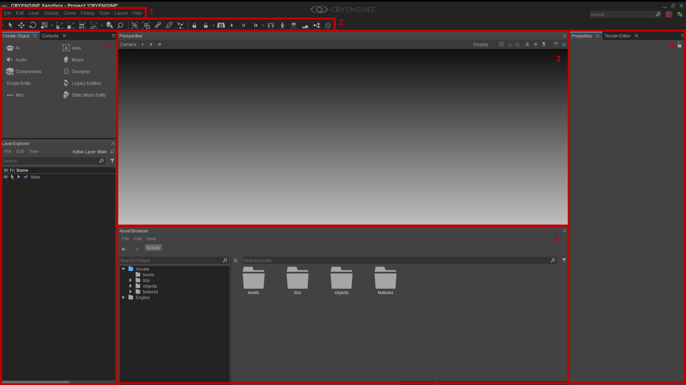

Обзор
На этих страницах, включая подстраницы, представлен обзор интерфейса редактора CRYENGINE Sandbox при первом его запуске.
Интерфейс можно сильно настроить, элементы можно отсоединить и разместить, например, на втором мониторе, или окна можно объединить вместе, чтобы обеспечить быстрый доступ, когда они потребуются.
Вам следует ознакомиться с Навигация по видовому экрану и Настройка макета Sandbox для обеспечения эффективного рабочего процесса.
Когда вы запустите CRYENGINE, интерфейс будет выглядеть так:

Этот интерфейс состоит из следующих элементов:
- Панель меню
- Панели инструментов
- Окно видового экрана
- Обновление 5.2 — улучшения UI
- Обновление 5.3 — улучшения UI
Нажмите на ссылку выше для получения дополнительной информации.